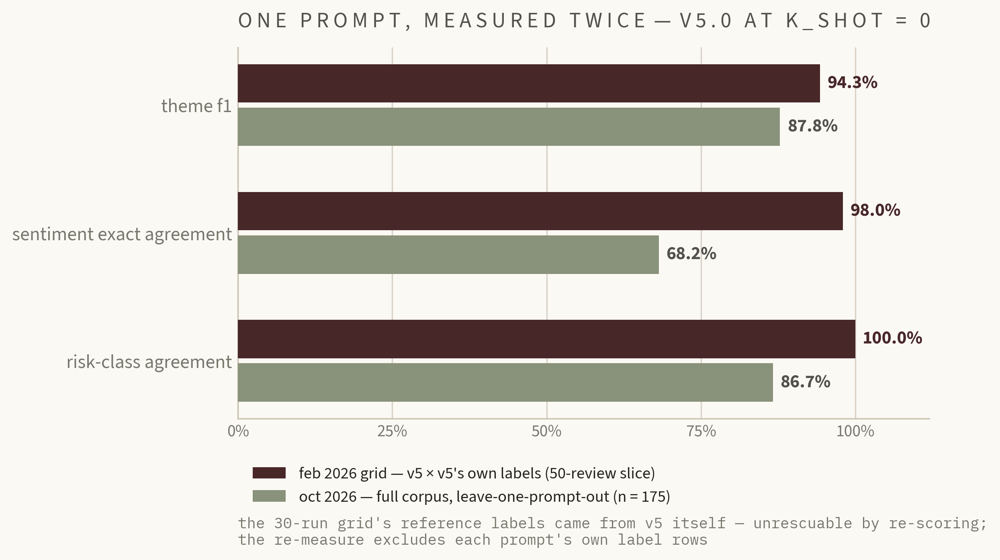
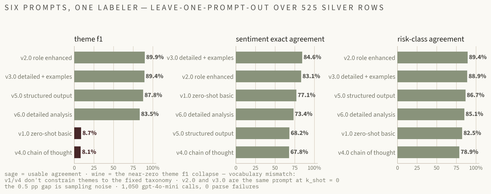

chapter 01 · the corpus
175 reviews of warehouse work
three sources, one schema — review_id, text, rating, date, year, quarter, source — merged into a single jsonl the whole pipeline reads. the repository ships synthetic fixtures only; the real corpus lives untracked in data_local/ — see the dataset card for every provenance gap.
| source | collection method | review dates | rows | the caveat that matters |
|---|---|---|---|---|
| glassdoor | manual copy-paste into a csv | 2024–2025 | 100 · every row carries a rating | the raw csv was never committed — the processed rows' original file is gone, a provenance gap the dataset card documents rather than hides |
| manual paste (37) + pushshift api (25) | 2020–2021 | 57 | pushshift public access died (http 403 since 2023) — the scraper ships defunct, and reddit collection would need a redesign against the official api | |
| youtube | caption-level transcripts from 4 of 8 hand-picked videos | uploaded 2024 | 18 chunks | spoken commentary, not written reviews — the unit of analysis is the caption chunk, not the video or the creator |
collection summary from DATASET_CARD.md · corpus date range 2020-08-01 → 2026-02-15 · mean glassdoor rating 3.36 / 5
what a data scientist should hold onto before trusting any number on this page: the corpus is temporally lopsided — of the 170 dated reviews, 149 land in 2024–2026 while 2020–2023 contribute 21, and 5 rows carry no date at all — so anything trend-shaped on this page is really recent-era-shaped. ratings exist only for glassdoor (100 of 175), which makes every rating-conditioned view glassdoor-conditioned by construction. the sources are not interchangeable: a youtube caption chunk and a glassdoor review are different speech acts, with different lengths, different vocabularies, and different selection mechanisms — people who review employers are not a random sample of employees, and warehouse-creator videos have their own audience dynamics. and licensing is the quiet constraint underneath everything: the mit license covers code only, no right to redistribute the text is claimed or granted, which is why the repository ships synthetic fixtures and why every public number here is an aggregate, never a row.
SOURCES
GLASSDOOR RATINGS
REVIEWS BY YEAR
chapter 02 · what the pipeline extracts
signals, labeled by an llm
the same pipeline that will analyze new reviews labeled the corpus: one label per review from the v5 template — sentiment 1–5, up to three themes from a fixed taxonomy, and a retention-risk class. these are the silver labels the whole evaluation stands on.
THEMES · MENTIONS ACROSS 175 REVIEWS
SENTIMENT · 1–5
RETENTION RISK
chapter 03 · the harness
six prompts, scored leave-one-prompt-out
the original grid let a prompt be scored against its own labels; the headline it produced — 94.3% theme f1 — was retired. the corrected harness splits by unique review id, excludes each prompt's own label rows, and reports agreement with an llm labeler as what it is.
| prompt | theme f1 | sentiment agr. | risk agr. | label rows | unique reviews |
|---|
✗ the retired headline — kept on file as a measurement-error case study
v5.0 at k_shot = 0 once scored 94.3% theme f1 / 98% sentiment / 100% risk in a 30-run grid — against reference labels v5 itself had generated. the same prompt, measured leave-one-prompt-out on the full corpus: 87.8% / 68.2% / 86.7%. the grid cannot be rescued by re-scoring; its artifacts are retained, and docs/evaluation.md forbids citing them as performance.


the full leaderboard: v2.0 role-enhanced leads theme f1 (89.9%) and risk (89.4%); v3.0 — the same prompt at k_shot = 0 — leads sentiment (84.6%). the elaborate prompt lost: chain-of-thought is last on every metric, and v1/v4's near-zero theme f1 is vocabulary mismatch against the fixed taxonomy.
chapter 04 · the agent
one plan, sequential tools
the analysis half of the pipeline: one llm planning call produces a json plan, then tools run sequentially and a synthesis step returns sentiment, themes, and risk. reAct-inspired, not reAct — there is no re-planning from tool observations, and the docs say so plainly.
a langchain variant that iterates with true reAct loops exists in the repo and has never been fully exercised — a documented limitation, not a hidden one. the api works keyless except /analyze; nothing here is deployed as a live service.
chapter 05 · the alignment extension
dpo on silver preferences
the 525 cross-prompt silver labels become 137 constructed preference pairs — where two generator prompts agree and the third disagrees, the consensus label set is chosen and the outlier is rejected — and a 0.5b model is tuned with lora-dpo to move toward that consensus.
BASE VS TUNED · 27 REVIEW-DISJOINT HELD-OUT PAIRS
what this is
- dpo training with lora on an open-weights model (qwen2.5-0.5b-instruct)
- preference tuning — preferences constructed from llm label consensus
- a +33.3 pp risk-class agreement shift on held-out reviews
- adapter-only training on apple silicon · trl 0.14 + peft · fp16 mps
what this is not
- not rlhf — no reward model, no ppo, dpo skips both by design
- not trained on human preferences — the preferences are silver
- not accuracy — agreement with an llm consensus labeler, bias included
- not settled — consensus circularity, one unseeded run, n = 27 (±18 pp)
training facts, reported because the docs require them: efficient profile (2 epochs, batch 2, reviews truncated to 300 tokens for 16% of pairs), final dpo loss 0.669 from 0.693 — ln 2, the loss dpo starts at when it knows nothing — and a 5h04m wall clock, because a heat-soaked macbook degrades step time roughly 10×. the next layer is a human preference set, replacing silver preferences entirely.